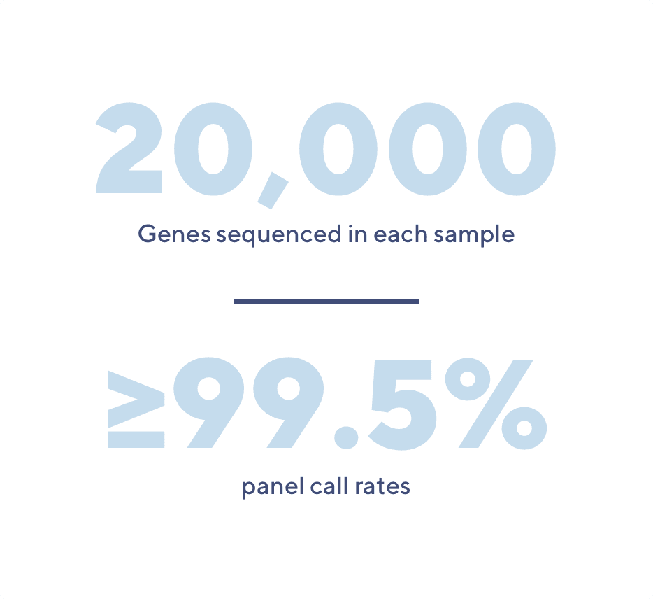

The Exome+ assay provides the flexibility needed to build a comprehensive panel that can be expanded over time. With ~20,000 genes sequenced in each sample, every gene becomes a candidate for inclusion. And, while we have ensured the highest call rates across those genes that are most likely to belong to a panel, the Exome+ assay delivers high call rates for all genes beyond this core set.